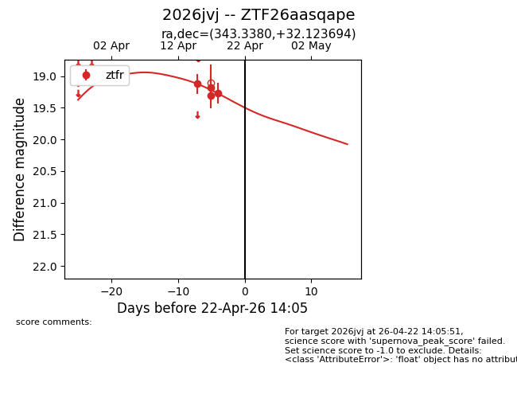
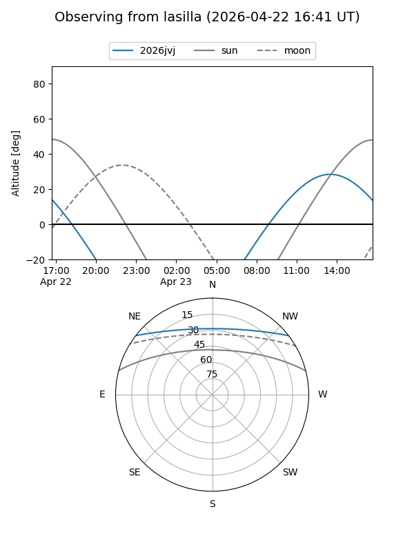
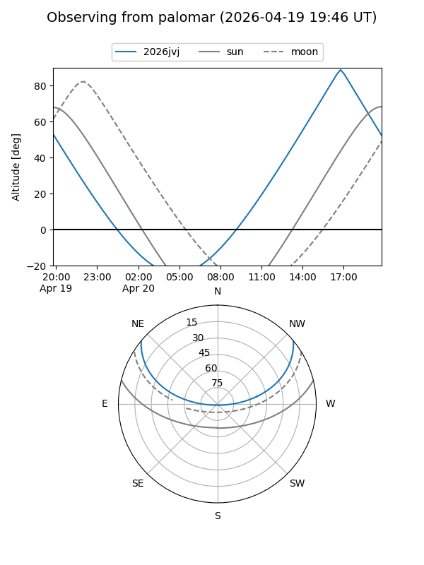
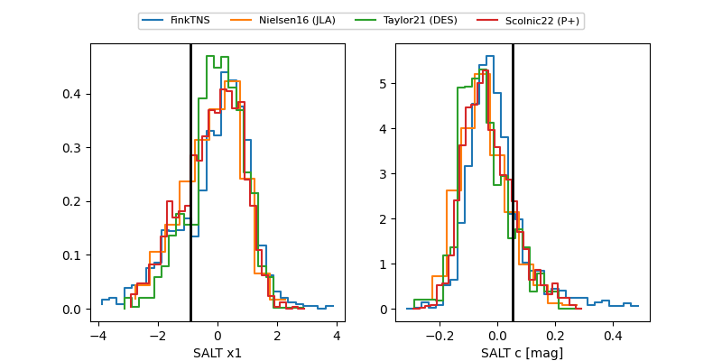

2026jvj
Target 2026jvj at 2026-04-22 14:10
Aliases and brokers:
FINK: link
Lasair: link
ALeRCE: link
TNS: link
YSE: link
alt names
ZTF26aasqape (ztf,fink_ztf)
2026jvj (tns,yse)
Coordinates:
equatorial (ra, dec) = 343.3380,+32.12369
equatorial (HMS+DMS) = 22:53:21.11,+32:07:25.30
galactic (l, b) = (95.6539,-24.41906)
Flags:
Photometry:
last ztfr=19.27
4 ztfr detections
Lightcurve

Visibility


Additional plots
